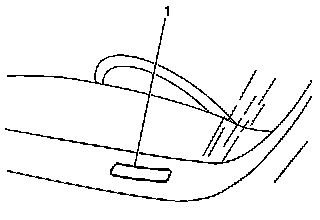
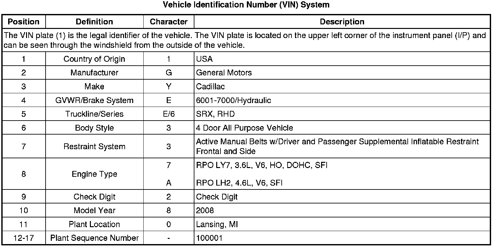
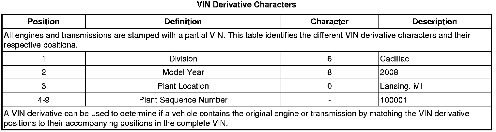
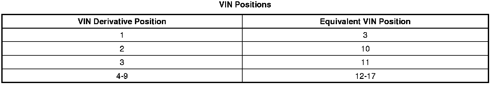

Vehicle, Engine and Transmission ID and VIN Location, Derivative and Usage
Vehicle, Engine and Transmission ID and VIN Location, Derivative and Usage




5L40-E/5L50-E M82 Transmission ID and VIN Derivative Location
Refer to Transmission Identification Information (Transmission Identification Information) .
6L50/6L80/6L90 Transmission ID and VIN Derivative Location
Refer to Transmission Identification Information (Transmission Identification Information) .
3.6L LY7 Engine ID and VIN Derivative Location
Refer to Engine Identification (Application and ID) .
4.6 LH2 Engine ID and VIN Derivative Location
Refer to Engine Identification (Application and ID) .